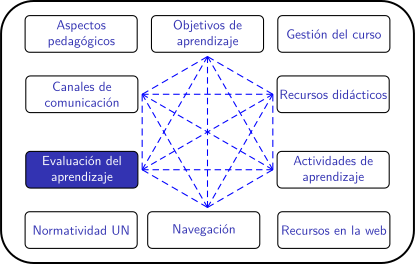

Planificación de clases remotas en la UNAL (periodo 2020-02)
Ejemplos de rúbricas
Ejemplo de rúbrica para evaluar el trabajo en equipo
| 4 Excelente | 3 Satisfactorio | 2 Mejorable | 1 Insuficiente | |
|---|---|---|---|---|
| Participación y colaboración | Todos los miembros del equipo han participado activamente en las tareas propuestas y han colaborado ayudando a los demás. (4) | La mayor parte de los miembros del equipo han participado activamente en las tareas propuestas y han colaborado ayudando a los demás. (3) | La mitad de los miembros del equipo ha participado activamente en las tareas propuestas y han colaborado ayudándose entre sí. (2) | Solo un miembro del equipo (o ninguno) ha participado de forma activa en las tareas propuestas y no ha habido colaboración ni ayuda entre ellos. (1) |
| Distribución de las tareas | Las tareas se han repartido de forma equitativa entre todos los miembros del equipo. (4) | La mayor parte de las tareas se han repartido de forma equitativa entre todos los miembros del equipo. (3) | Solo la mitad de las tareas se ha repartido de forma equitativa entre todos los miembros del equipo. (2) | Ha habido un reparto muy desigual de las tareas entre los diferentes miembros del equipo. (1) |
| Integración ente los miembros del equipo | Durante la realización de todas las tareas, los miembros del equipo han expresado libremente sus opiniones y puntos de vista, han escuchado las opiniones de los demás y han sido capaces de llegar a un consenso. (4) | Durante la realización de la mayor parte de las tareas, los miembros del equipo han expresado sus opiniones con libertad, han escuchado a los demás y han sido capaces de llegar a un consenso. (3) | Durante la realización de las tareas, solo la mitad de los miembros del equipo ha expresado libremente sus opiniones, ha escuchado las de los demás y han logrado ponerse de acuerdo. (2) | Durante la realización de las tareas, solo un miembro del equipo ha expresado su opinión, no ha habido diálogo y se ha terminado imponiendo la opinión de una sola persona. (1) |
| Asunción de funciones y responsabilidades | Todos los miembros del equipo han ejercicio muy bien sus funciones y han cumplido a la perfección sus responsabilidades. (4) | La mayor parte de los miembros del equipo ha ejercido sus funciones y ha cumplido con sus responsabilidades. (3) | Solo la mitad de los componentes del equipo ha ejercido bien sus funciones y ha cumplido con sus responsabilidades. (2) | Solo un miembro del equipo (o ninguno) ha ejercido bien sus funciones y ha cumplido con sus responsabilidades. (1) |
- Actividad
- Nombre
- Fecha
- Puntuación
- Notas
- Reiniciar
- Imprimir
- Aplicar
- Ventana nueva
Ejemplo de rúbrica para evaluar una exposición oral
| 4 Excelente | 3 Satisfactorio | 2 Mejorable | 1 Insuficiente | |
|---|---|---|---|---|
| Habla | Habla despacio y con gran claridad. (4) | La mayoría del tiempo, habla despacio y con claridad. (3) | Unas veces habla despacio y con claridad, pero otras se acelera y se le entiende mal. (2) | Habla rápido o se detiene demasiado a la hora de hablar. Además su pronunciación no es buena. (1) |
| Vocabulario | Usa vocabulario apropiado para la audiencia. Aumenta el vocabulario de la audiencia definiendo las palabras que podrían ser nuevas para ésta. (4) | Usa vocabulario apropiado para la audiencia. Incluye 1-2 palabras que podrían ser nuevas para la mayor parte de la audiencia, pero no las define. (3) | Usa vocabulario apropiado para la audiencia. No incluye vocabulario que podría ser nuevo para la audiencia. (2) | Usa varias (5 o más) palabras o frases que no son entendidas por la audiencia. (1) |
| Volumen | El volumen es lo suficientemente alto para ser escuchado por todos los miembros de la audiencia a través de toda la presentación. (4) | El volumen es lo suficientemente alto para ser escuchado por todos los miembros de la audiencia al menos 90% del tiempo. (3) | El volumen es lo suficientemente alto para ser escuchado por todos los miembros de la audiencia al menos el 80% del tiempo. (2) | El volumen con frecuencia es muy débil para ser escuchado por todos los miembros de la audiencia. (1) |
| Comprensión | El estudiante puede con precisión contestar casi todas las preguntas planteadas sobre el tema por sus compañeros de clase. (4) | El estudiante puede con precisión contestar la mayoría de las preguntas planteadas sobre el tema por sus compañeros de clase. (3) | El estudiante puede con precisión contestar unas pocas preguntas planteadas sobre el tema por sus compañeros de clase. (2) | El estudiante no puede contestar las preguntas planteadas sobre el tema por sus compañeros de clase. (1) |
| Postura del cuerpo y contacto visual | A la hora de hablar la postura y el gesto son muy adecuados. Mira a todos los compañeros con total naturalidad. (4) | La mayoría del tiempo la postura y el gesto son adecuados y casi siempre mira a los compañeros mientras habla. (3) | Algunas veces, mantiene la postura y el gesto adecuados, y otras no. En ocasiones mira a sus compañeros. (2) | No mantiene la postura y gesto propios de una exposición oral y, la mayoría de las veces, no mira a sus compañeros. (1) |
| Contenido | Demuestra un completo entendimiento del tema que expone. (4) | Demuestra un buen entendimiento del tema que expone. (3) | Demuestra un buen entendimiento de partes del tema que expone. (2) | No parece entender muy bien el tema que expone. (1) |
- Actividad
- Nombre
- Fecha
- Puntuación
- Notas
- Reiniciar
- Imprimir
- Aplicar
- Ventana nueva
Otros ejemplos de rúbricas
En la Dirección Académica de la sede Medellín nos comparten también los siguientes ejemplos:
Rúbrica para evaluar aprendizaje en mapas conceptuales
|
Estándar de desempeño/jerárquicos
|
Niveles de calidad | ||||
| Criterios específicos | 5 | 4 | 3 | 2 | 1 |
| Título | El título refleja adecuada y pertinentemente el propósito y/o contenido temático y se encuentra identificado claramente en el mapa conceptual. | El título refleja el propósito y/o contenido temático y se encuentra identificado en el mapa conceptual. | El título refleja en gran medida el propósito y/o contenido temático y es identificabe en el mapa conceptual. | El título no refleja adecuadamente el propósito y/o contenido temático y no se encuentra identificado claramente. | El título no es pertinente con el propósito y/o contenido temático y no se encuentra identificado o este no corresponde a lo abordado en el texto guía o carece de título. |
| Conceptos y relación: contenido | Se identificó satisfactoriamente los conceptos más importantes del texto guía y guardan armónica relación unos con los otros. | Se identificó adecuadamente los conceptos más importantes del texto guía y guardan relación unos con los otros. | Los conceptos identificados en el mapa conceptual son ideas secundarias del texto guía y guardan mediana relación unos con los otros. | Los conceptos identificados en el mapa son ideas del texto guía y no existe relación entre los conceptos abordados. | Los conceptos identificados en el mapa son ideas confusas del texto guia y no existe relación alguna entre los conceptos abordados. |
| Estructura y jerarquía | Todos los conceptos tienen un orden lógico y pertinente. Presenta más de 4 niveles jerárquicos, difrenciando conceptos inclusivos y subordinados con una organización clara y fácil de leer e interpretar. | La mayoría de los conceptos tienen un orden lógico. Presenta más de 3 niveles jerárquicos, difrenciando conceptos inclusivos y subordinados, con una organización clara y fácil de leer. | Presenta menos de 3 niveles jerárquicos y no se diferencia claramente los conceptos inclusivos de los subordinados. | Se presenta menos 2 niveles de jerarquía y no se encuentra diferencia entre los conceptos inclusivos y los subordinados o se confunden unos con los otros. | Los conceptos abordados no presentan niveles de jerarquía y su organización es confusa. |
| Palabras de enlace y preposiciones | Todos conectores usuados en el mapa conceptual son válidos y permiten una excelente lectura de preposiciones. | La mayoría de los conectores usuados en el mapa conceptual son válidos y permiten la lectura de varias preposiciones. | Algunos conectores usuados en el mapa conceptual son adecuados y dan lugar a la formación de varias preposiciones. | Muchos de los conectores que se encuentran en el mapa no son correctos y la lectura de preposiciones es escasa. | Los conectores utilizados en el mapa conceptual no son correctos, por lo que no se puede evidenciar preposiciones. |
| Concepto de mapa como evidencia de aprendizaje | El mapa conceptual refleja una excelente selección de la información, estructura jerárquica, relación entre conceptos, lo que evidencia una adecuada comprensión del tema. | El mapa conceptual da muestra de una correcta selección de la información, estructura jerárquica, relación entre conceptos, lo que evidencia comprensión del tema. | El mapa conceptual, la selección de información, estructura jerárquica, relación entre conceptos, por lo que muestra comprensión de algunos conceptos temáticos. | La selección de la información, evidencia muy poca comprensión temática y la relación entre conceptos es difusa. | La selección de la información, no evidencia comprensión temática, ni permite relacionar los conceptos alojados en el mapa conceptual. |
Ficheros adjuntos
Reflexión
- ¿Conoce otro tipo de rúbricas que puedan enriquecer este listado? Participe en el foro.
Obra publicada con Licencia Creative Commons Reconocimiento Compartir igual 4.0